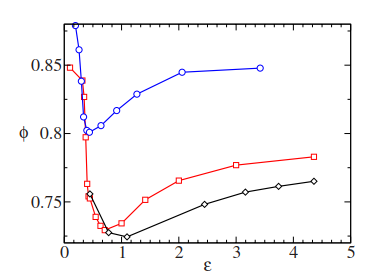
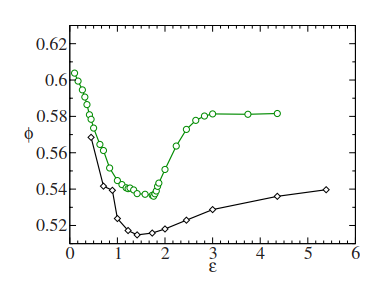
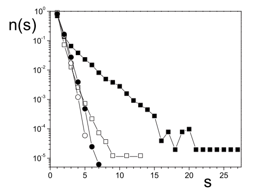

Compactación
de Materiales Granulares
(continuación)

Modelo de volumen libre
Boutreux, T. & de Gennes, P. Compaction of granular mixtures: a free volume model. Physica A 244, 59–67 (1997)
- Calculan el volumen libre por grano (promedio)
siendo $w$ el volumen de una partícula y $\phi_m$ la fracción de volumen máxima que puede alcanzar el empaquetamiento.
- Una hipótesis es que para compactar necesitan que una partícula entre en un "hueco" de tamaño adecuado $\to$ volumen $\geq w$
Modelo de volumen libre
- Además suponen que distribución de "huecos" sigue una distribución de Poisson y la cinética de compactación estará relacionada a:
- La tasa de compactación (siendo $n$ el número de tappings):
$\dfrac{d\phi}{dn} = k\exp\!\left(-\dfrac{\phi_m^2}{(\phi_m - \phi)}\right)$
$n_0$ es un indicador "grueso" del número de tappings que se necesita para pasar de $\phi_1$ a $\phi_m$
$n_0 = k\dfrac{\phi_m^2}{\phi_m - \phi_1}$
Modelo de volumen libre
dependencia similar a la encontrada en los experimentos de Chicago
$\rho(t) = \rho_f - \dfrac{\rho_0 - \rho_f}{1 + B\ln(1+t/\tau)}$
Si bien este enfoque predice correctamente la compactación lenta, no tiene en cuenta la influencia de la amplitud del tapping ni los fenómenos observados cuando esta amplitud varía durante el experimento.
Modelo de frustración de red
Nicodemi & Coniglio (1998): "Aging and Multiscaling in Out-of-Equilibrium Dynamical Processes in Granular Media" – PRL 82-5
Caglioti et al. (1997) A "Tetris-Like" Model for the Compaction of Dry Granular Media – PRL 79-8
Modelo de ocupación en una red bidimensional o tridimensional
Cada sitio puede estar vacío o contener una partícula, sujeta a ciertas restricciones geométricas y dinámicas
- Las partículas tienen forma anisotrópica (como las piezas del juego Tetris).
- La hipótesis es que NO pueden superponerse (dos partículas no pueden ocupar sitios vecinos si no cumplen cierta condición de compatibilidad)
Modelo de frustración de red
Tapping: El sistema se perturba al permitir que los granos se muevan en cualquier dirección permitida con una probabilidad $p_{up}$ de moverse hacia arriba ($0 < p_{up} < 0{,}5$) y una probabilidad $p_{down} = 1 - p_{up}$ de moverse hacia abajo.
Relajación: sólo se pueden mover hacia abajo.
La "amplitud de vibración" (análoga a una temperatura efectiva) está controlada por $x = p_{up}/p_{down}$
Modelo de frustración de red
$\leftarrow x$
donde
- $\rho_\infty = 1$
- $\Delta\rho_\infty = 0{,}25$
- $B$ y $\tau$: parámetros libres
$\tau = 4{,}3\,x^{-0{,}84}$
$\tau$ representa el tiempo mínimo tras el cual se empieza a observar un proceso de compactación. Para $t_n \ll \tau$, la fracción se mantiene prácticamente en el valor inicial
Modelo de frustración de red
Cada tap se realiza permitiendo que las partículas relajen bajo la gravedad manteniendo $\Gamma$ constante durante el intervalo de tiempo del tap ($\tau_0$) y luego apagando la vibración hasta que el sistema alcance una configuración estática
$\Gamma = -\dfrac{1}{\ln x}$
Incremento de la amplitud $\to$ $\gamma = \Delta\Gamma/\tau_0$
Sistema fuera del equilibrio (vidrios) ya que los tiempos de relajación son mayores que el tiempo $\tau_0$ de los experimentos
La rama reversible depende de la "tasa de enfriamiento $\gamma$"
Modelo de frustración de red
Sistema fuera del equilibrio (vidrios) ya que los tiempos de relajación son mayores que el tiempo $\tau_0$ de los experimentos
La rama reversible depende de la "tasa de enfriamiento $\gamma$"
Otros modelos numéricos
Luis A. Pugnaloni et al. (2008) Nonmonotonic reversible branch in four model granular beds subjected to vertical vibration. Physical Review E 78, 051305
A- Monte Carlo híbrido + deposición balística
B- Pseudo-dinámica
C- Deposición de Monte Carlo
D- Dinámica Granular DEM
En los modelos A–C, la intensidad del tapping se parametriza con un factor de expansión "A" en lugar de una aceleración reducida real.
Otros modelos numéricos
DISCOS
ESFERAS
Otros modelos numéricos
Determinan las partículas mutuamente estables para analizar los arcos en el empaquetamiento (salvo en el modelo C).
Tanto el número de arcos como el tamaño medio de los arcos presentan un máximo en la intensidad de tapping donde la fracción de empaquetamiento es menor.
Simulaciones numéricas: otras geometrías
Vidales AM, Pugnaloni LA, Ippolito C. Compaction and arching in tapped pentagon deposits. Granular Matter (2009)
PENTÁGONOS
Pseudo-dinámica (PMDM)
Simulaciones numéricas: otras geometrías
La compacidad crece a medida que aumenta A, sin mínimo (monótono)
Distribución de tamaños de arcos
Aplicación: resistencia del hormigón
Medici M.E., Benegas O.A., Uñac, R.O., Vidales A M. The effect of blending granular aggregates of different origin on the strength of concrete. Physica A (2012)
Las propiedades físicas de los granos afectan directamente las propiedades mecánicas del hormigón
Resistencia a compresión: Es la propiedad mecánica más relevante del hormigón estructural y depende de múltiples factores:
- Tipo y distribución de tamaño del árido
- Tipo y cantidad de cemento
- Relación agua/cemento
- Aditivos químicos y condiciones de curado
Aplicación: resistencia del hormigón
- Se usaron áridos de dos canteras distintas (Q1 y Q2)
- Se compararon áridos naturales (NA) y triturados (CA)
- Se estudió el efecto de la proporción CA/NA en la resistencia a compresión
- Se definió un parámetro $f$ que representa el porcentaje másico de árido triturado
Aplicación: resistencia del hormigón
Aplicación: resistencia del hormigón
natural triturado
Factor de forma
"specific surface area" (SSA)
Aplicación: resistencia del hormigón
Ensayo Uniaxial
Dependencia parabólica – competición de efectos $\to$ SSA y c